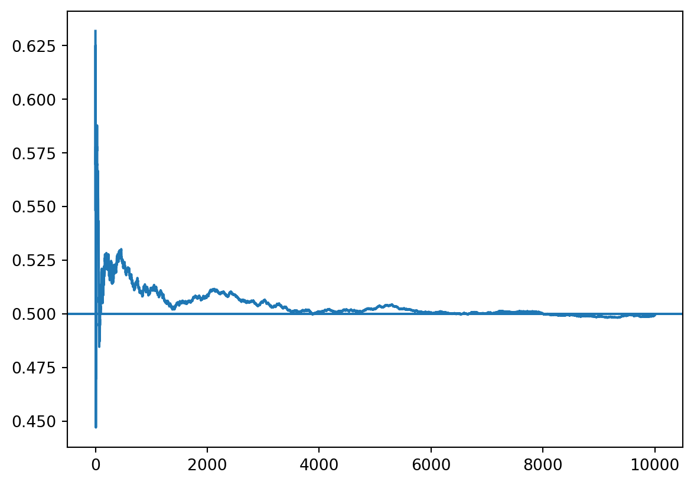
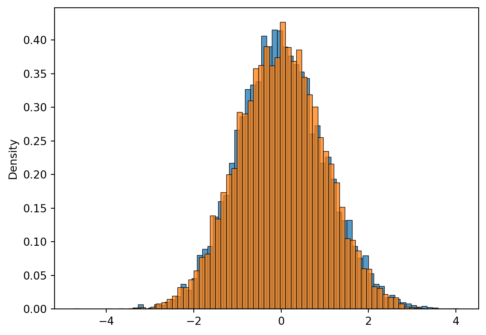

import numpy as np
import seaborn as sns
import matplotlib.pylab as plt
rng = np.random.default_rng(seed=313)
x = rng.uniform(0, 1, 10000)3 Limit theorems
Note
Updated 12/9: Added note to exercises and removed a redundant comment.
Updated 1/10: Added some exercise solutions.
3.1 Curriculum
Dekking et al., Chapter 13: The law of large numbers
Dekking et al., Chapter 14: The central limit theorem
The short notes below.
3.2 Notes
3.2.1 Law of large numbers
The law of large numbers states that the sample means \(\overline{X}_i=\frac{1}{n}\sum_{i=1}^n X_i\) converges to the population mean \(EX\) in probability as \(n\to \infty\). We illustrate this result using the continuous uniform distribution on \([0,1]\), called rng.uniform in Numpy. The density of this distribution is \(f(x)=1[x\in[0,1]]\), where \(1(x\in A)\) denotes the indicator function you are used to from the previous probability course. (It is commonly written as \(I[x\inA]\) or just \(I(A)\).) Its expectation is equal to \(1/2\).
3.2.1.1 Quick exercise
Show that the expected value of the uniform distribution on \([a,b]\) is \((b+a)/2\) using the definition \(f(x;a,b) = 1/(b-a)1[x\in[a,b]]\).
Solution
\[\int_a^b x/(b-a)dx = \frac{1}{2}(b^2-a^2)/(b-a) = \frac{1}{2}(b+a)(b-a)/(b-a) = \frac{1}{2}(b+a)\].
We first simulate \(n=10000\) of uniforms and store them x. These correspond to a sequence \(X_1,X_2,X_3,\ldots X_n\) of independently and identically distributed uniform variables.
Now we compute the partial means \(\overline{X}_j = \frac{1}{n}\sum_{i=1}^n X_i\). This is most conveniently done using the np.cumsum function, which calculate the cumulative sums of x, i.e., y[i] = x[0:(i+1)].sum() when y=np.cumsum(x).
means = np.cumsum(x) / (np.arange(len(x)) + 1)Now we can illustrate the law of large numbers:
plt.plot(means)
plt.axhline(y = 0.5)
plt.show()
Observe that the partial means get arbitrarily close to the true expected value (\(0.5\)) as \(n\) increases.
3.2.1.2 Quick exercise
Make a function sim_lln(n, gen) that takes a number n and a random number generator such as lambda x: rng.uniform(2, 3, x), simulates n numbers, and makes a plot similar to the one above.
3.2.2 Central limit theorem
Informally speaking, the central limit theorem states that whenever \(\{X_i\}_{i=0}^n\) are independently and identically distributed according to some distribution \(F\) with mean \(\mu\) and standard deviation \(\sigma\) (in mathematical notation \(X_i \stackrel{iid}{\sim} F\)) then \(\sqrt{n}\frac{\overline{X} - \mu}{\sigma}\) is approximately normally distributed. (Here \(\overline{X}\) denotes the sample mean.) There is a more precise statements of this result, but that is beyond the scope of this course; see e.g. wikipedia for more details.
It is fairly easy to illustrate the central limit theorem (CLT) using simulations.
import numpy as np
rng = np.random.default_rng(seed=313)
n = 100
x = rng.gamma(3, 4, (n, 10000))
means = x.mean(axis = 0)
rescaled = np.sqrt(n) * (means - x.mean()) / np.std(x, ddof = 1)Here the rescaled, the rescaled sample means, approximates the distribution of \(\sqrt{n}\frac{\overline{X} - \mu}{\sigma}\).
Let’s simulate some true normal values to verify this:
normals = rng.standard_normal(10000)Now we can plot.
import seaborn as sns
import matplotlib.pylab as plt
plt.clf()
sns.histplot(rescaled, stat = "density")
sns.histplot(normals, stat = "density")
plt.show()
Observe that the histograms overlap closely.
Quick exericise: If you run the simulation with \(n=10\) instead of \(n=100\), do you think the histograms will match more or less closely? Run the simulation to verify.
Quick exercise: Change the parameters of the gamma distribution rng.gamma; look up the documentation if you have to. Can you find parameters where the normal approximation in the central limit theorem is really poor when \(n=100\)?
3.3 Exercises
3.3.1 Chapter 13
Short solution proposals can be found in the book. * 13.1:(This exercise requires more work than the rest.) Use Python to simulate from these variables. You can find all of these distributions in np.random, just initialize an rng object first! If you struggle finding the distributions, take a look at the Numpy documentation. Use the .mean method to approximate the probabilities and Wikipedia for the standard deviations (or use Numpy here as well.) Note: Be sure to do the exercise for one \(k\) and one distribution first, then generalize! * 13.2 * 13.3 * 13.5 * 13.7: The function \(F_n\) is known a the empirical cumulative distribution function, shortened to ecdf. You can use Numpy to verify the claims of this exercise; write your own function or use the ecdf function from the statsmodels package, from statsmodels.distributions.empirical_distribution import ECDF. * 13.9: If you are not able to find the required \(a\), find it using simulations. * 13.12: (Optional)
Solution to some exercises
3.3.2 Exercise 13.1
# The “µ ± a few σ” rule. Most of the probability mass of a
# random variable is within a few standard deviations from its expectation.
# U(−1, 1), U(−a, a), N(0, 1), N(µ, σ2), Par (3), Geo(1/2).
rng = np.random.default_rng(seed=313)
n = 100000
randoms = [
rng.uniform(-1, 1, n),
rng.uniform(-2, np.pi, n),
rng.normal(0, 1, n),
rng.normal(1, 2, n),
rng.pareto(3, n),
rng.geometric(0.5, n)]
means = [np.mean(x) for x in randoms]
stdevs = [np.std(x) for x in randoms]
def prob(k, x, mean, std):
""" Approximate P(|X-mean|<k*std)."""
return (np.abs(x - mean) < k * std).mean()
k = 1
[prob(k, x, mean, std) for x, mean, std in zip(randoms, means, stdevs)]
def probs(k):
""" List of approximate probabilities."""
return [prob(k, x, mean, std) for x, mean, std in zip(randoms, means, stdevs)]
np.array([probs(k) for k in [1, 2, 3, 4]])
# Chebyshev's inequality: P(|Y-\mu|<k*std) >= 1-1/k^2
[round(1-1/k**2, 3) for k in [1, 2, 3, 4]][0.0, 0.75, 0.889, 0.938]3.3.3 Exercise 13.2
Either integrate or use wikipedia. The mean is \((b+a) / 2\).
3.3.4 Chapter 14
The cumulative distribution function of a normal variable can be found in Scipy. For instance, when \(X\) is normal with mean \(0\) and standard deviation \(1\). Then we have:
from scipy.stats import norm
norm.cdf(0, loc=0, scale=1)Short solution proposals can be found in the book.
- 14.1: Solve this using Python. You can also simulate variables with the required means and variances using
np.uniformwith the correct choices oflowandhigh. Use the formulas \(E(X)=(b+a) / 2\) and \(\textrm{Var}X = (b-a)^2/12\) and solve for \(a\) and \(b\). - 14.2: You can use
np.random.betato simulate from the Beta distribution. The parameters corresponding to the distribution in the exercise is \(a=1\), \(b=4\). Use this to compare the normal approximation to the true distribution of means. (Hint: Simulate a \(625\) variables a bunch of times and use the mean function. You can either calculate the variance of \(X\) yourself or use wikipedia.) - 14.8
- 14.3
- 14.4
- 14.7
- 14.9: This is an exercise about translating a textual problem into a mathematical one! It’s always a good idea to do all translations first and calculations afterward.
Solution to exercise 14.1
4 CLT: Use that the sum has mean approximate 144 * 2 and variance approximately
5 144 * 4 (so standard deviation sqrt(144) * 2)
from scipy.stats import norm norm.pdf(144, 144 * 2, np.sqrt(144) * 2)
6 The uniform distribution on [a,b] has variance
7 (b-a)^2/12 = 4 and mean (b+a)/2 = 2. We can solve the first to get
8 b = -4a. Then the second equation yields 5^2 a^2 / 12 = 4, so that
9 12 * 4 / 25 = a^2, with b = -4a. It follows that a = - (2 * sqrt(12)) / 5
import numpy as np rng = np.random.default_rng(seed=313) a = -2 * np.sqrt(12) / 5 b = -4 * a
10 Verify
x = rng.uniform(a, b, 100000) x.var() x.mean()
11 Simulate
y = rng.uniform(a, b, (144, 100000)) sums = y.sum(axis=0) (sums > 144).mean()